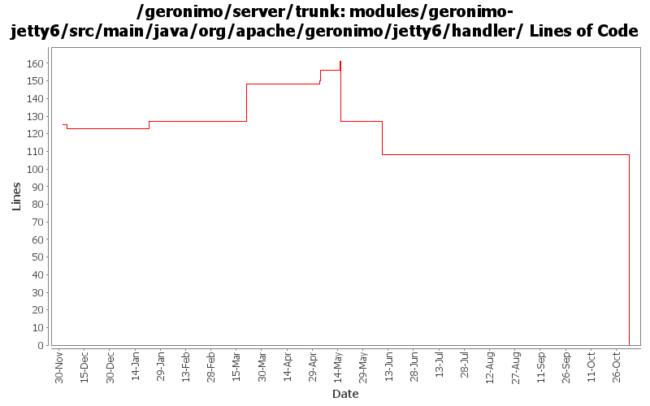

[root]/modules/geronimo-jetty6/src/main/java/org/apache/geronimo/jetty6/handler

| Author | Changes | Lines of Code | Lines per Change |
|---|---|---|---|
| Totals | 27 (100.0%) | 157 (100.0%) | 5.8 |
| djencks | 7 (25.9%) | 126 (80.3%) | 18.0 |
| kevan | 11 (40.7%) | 13 (8.3%) | 1.1 |
| rickmcguire | 1 (3.7%) | 10 (6.4%) | 10.0 |
| dain | 1 (3.7%) | 8 (5.1%) | 8.0 |
| prasad | 7 (25.9%) | 0 (0.0%) | 0.0 |
GERONIMO-3565. Modules distributed amongst framework/modules and plugins
0 lines of code changed in 7 files:
GERONIMO-2687. Don't construct default and run-as subjects, get them from a login module. Also creates a separate server-security-config for the security config stuff you probably want to change. Also fixes lots of security problems, including mdb run-as handling.
13 lines of code changed in 1 file:
GERONIMO-3154 Implement security for jetty using only spec compliant jacc calls
82 lines of code changed in 1 file:
Fix exception when authenticator fails because of missing certs.
10 lines of code changed in 1 file:
Only rollback if the Tx is marked rollback or if this is the orginal web request
8 lines of code changed in 1 file:
GERONIMO-3137 untested fix for jetty, rollback a leftover tx on exit
2 lines of code changed in 1 file:
GERONIMO-2949 get the jndi handler outside the context handler: GERONIMO-3000 provide default locale encoding mappings and mimetype mappings: this should fix 2999 for jetty, but I don't know how to test
24 lines of code changed in 1 file:
GERONIMO-2709 escape colons in pathInContext so permission constructor does not get confused
5 lines of code changed in 1 file:
GERONIMO-2537 Fix notices and src headers in recent jee5 updates. Update Web Console notice.txt w/ ibm donation information, add copyright to assembly notice files, and remove ASF v 1.1 license from source borrowed from xerces project
13 lines of code changed in 11 files:
GERONIMO-2616 Copy jee5 work from sandbox, make it build in normal build
0 lines of code changed in 2 files: